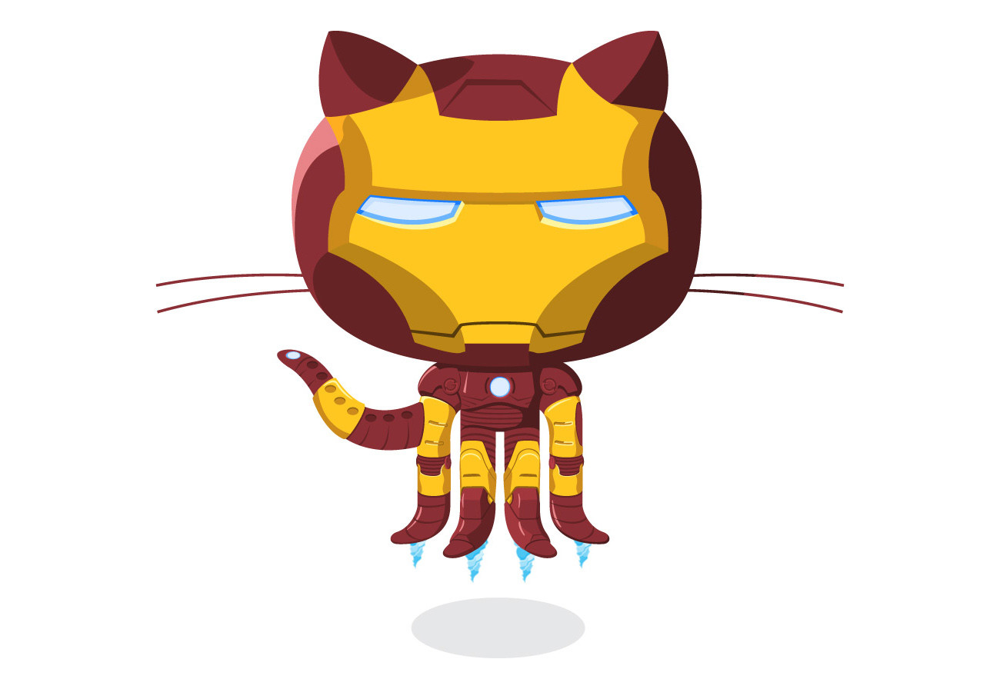

Fidélitas
Integrantes:
Margarita Obando Segura
Erley
Profesor
Arturo Ramirez Hegg
Calidad del software


Es una herramienta gratuita de open source para el manejo de control de versiones.
GitHub permite la administración de proyectos de manera fácil, eficiente y rápida, además es una herramienta donde no se necesita saber código para poder manejarla.

Una característica que hace a GIT única en cuanto a las herramientas de gestión de configuración es él Branching and Merging (Ramificación y Fusión).
-El Branching (ramificación): Consta en crear varias versiones del mismo código que son independientes del él branch master que es considerado él branch definitivo. Se pueden crear la cantidad que sea necesario.
-El Merge (Fusión): Tiene la función de fusionar él o los branch al master una vez que se hayan concluidos los cambios deseados.

Hola